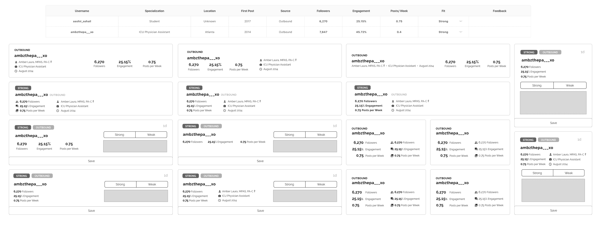
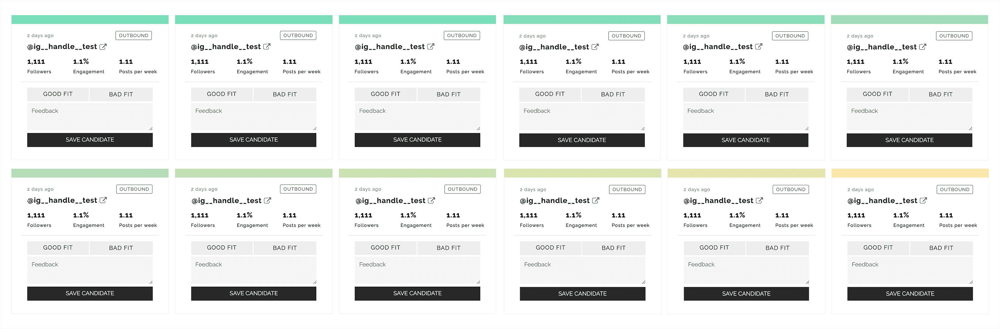

Ambassador Prospecting
Team: Project Manager, Full Stack Engineer, Machine Leaning Engineer
Ambassador Prospecting automates the discovery of qualified influencers suitable for influencer marketing and streamlines a highly manual process spread across multiple tools.
Using the tool, the client is able to more quickly review qualified outbound candidates and inbound candidates.

Problem Scope
The client uses influencer marketing to generate marketing content and brand awareness. They wanted to more than double the number of ambassadors and improve occupational and geographic diversity. Their process was highly manual, and off the shelf tools returned candidates that didn't match the brand's standards.
My team scraped leads from comments on the client’s posts. These leads were then rated as “Strong,” “Undecided,” or “Weak” matches based on various features, and the client was asked to evaluate the accuracy of the machine generated ratings. After adjusting the scoring engine based on user feedback, we felt confident in building a usable lead generation tool.

Research
I met with the ambassador program director to discuss her workflow and painpoints and diagramed her process and how it might look after our intervention. My key takeaways from that conversation were:
- The workflow is spread across many tools. Outbound leads are saved in Instagram, free text notes, emails, and spreadsheets. Inbound leads reach out through Instagram messages and emails and then fill out a Google Form. These leads are reviewed and copied into another spreadsheet.
- Scoring candidates is a binary decision.The proof of concept delivered "Strong," "Undecided," and "Weak" leads and the user scored them as "Good," "Okay," or "Bad" fits. In reality, an "Okay" candidate would be passed over, due the sheer volume of leads.
- Engagement, follower metrics, and content quality are the primary deciding factors. While the inbound lead form involves free text questions, these answers are the last feature reviewed. The mentioned metrics are used first to evaluate leads.
Exploration
With the research in mind, I began figuring out how leads would be displayed on the screen. I explored presenting various types of candidate information, such as Instagram bios and account age, in different ways. Due to scraper limitations and best data practices, we decided to display three main metrics: Followers, Engagement Rate, and Post Cadence.
I then switched to designing in HTML/CSS to accomodate a two week release cycle so the client could continuously test the tool.
We reviewed user activity to ensure the scoring engine was still accurate but noticed the client was only evaluating ”Strong” leads, leaving “Undecided” leads untouched. The different between “Strong” and “Undecided” was arbitrarily set at 85% (“Strong” candidates have a 85% or higher chance of being a good fit). “Undecided” leads were still good candidates, but the language made them seem like a poor fit.
This posed a problem because we needed a diversity of ratings to keep the engine accurate. We needed to be sensitive to different priorities: the client's goal is to get as many qualified candidates as possible, whereas, internally, we were concerned with the accuracy of scoring. My team considered various solutions, but we settled on displaying ratings as a 12 step gradient to encourage more nuanced evaluation.
Resolution
For the final release, I adjusted the visuals to better fit the client's existing brand.
Future Considerations
- Data options
It would be helpful if recent posts could be included in each card, as content is a key factor when evaluating candidates. User bios are also important, and the ability to search for certain keywords would be helpful when seeking out specific types of professionals (e.g. vetenarians) for the ambassador program. - Fluid interactions
Certain interactions, such as record editing, are a bit clunky, as we avoided using JavaScript. - Further automation
There are more opportunities to further reduce friction and time spent such as exporting directly to the client's database/spreadsheet tool or automated emails to approved candidates. - Limited Scope
Our solution on addresses one aspect of the Ambassador Director's job. As the program scales, ambassador management will become a constraint.